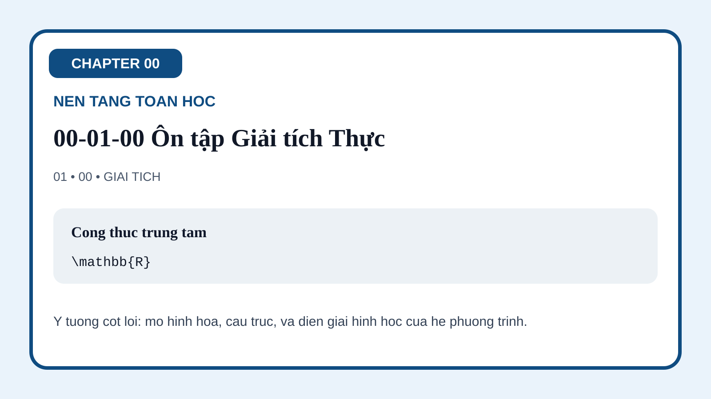
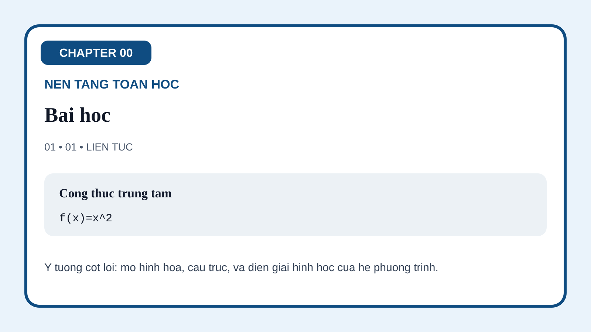
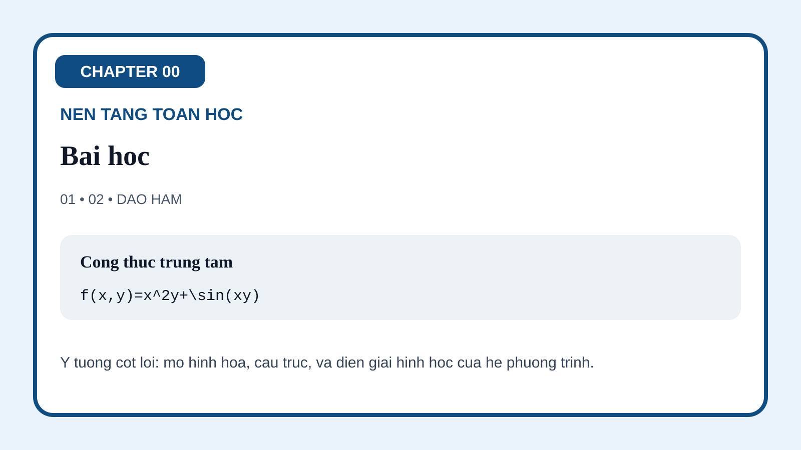
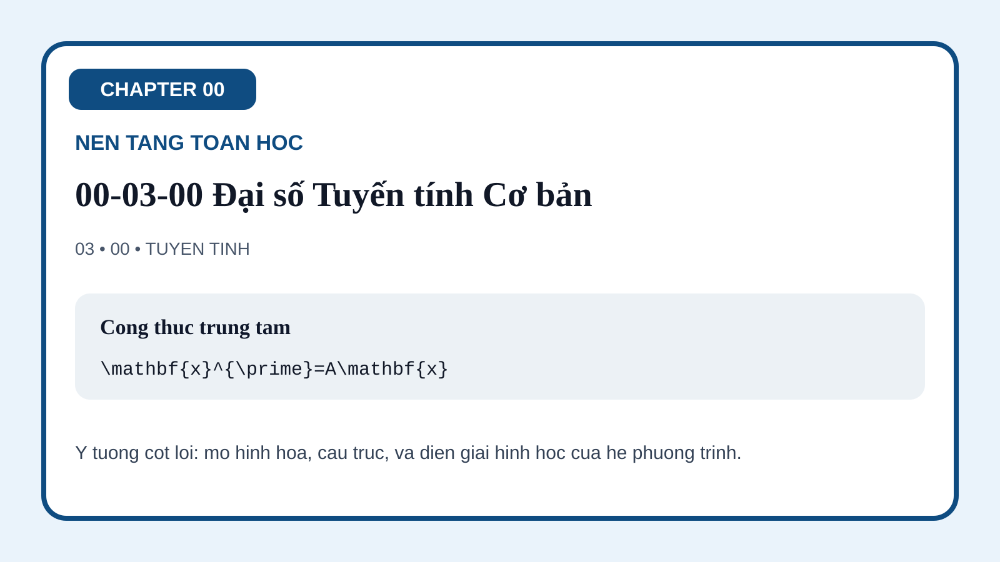
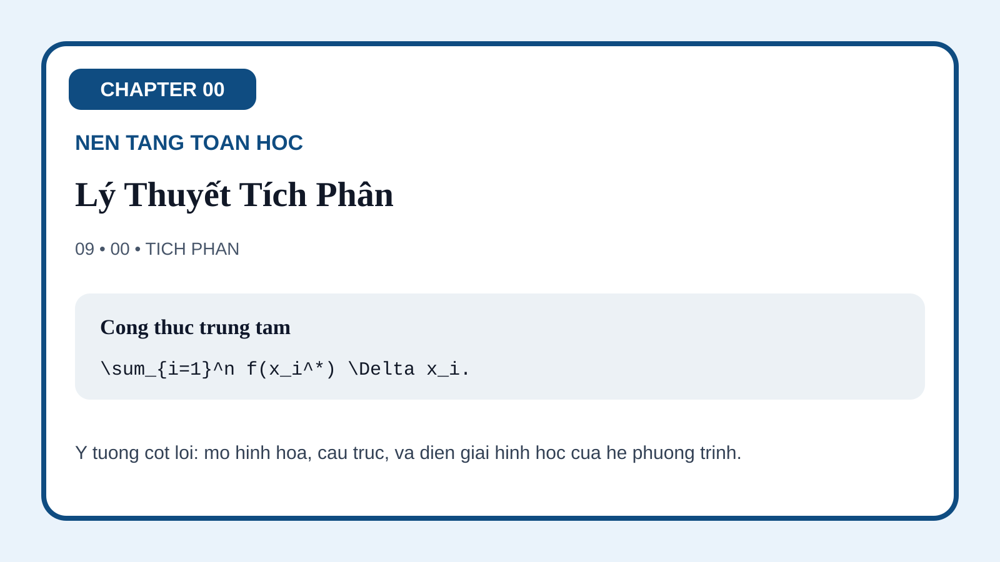
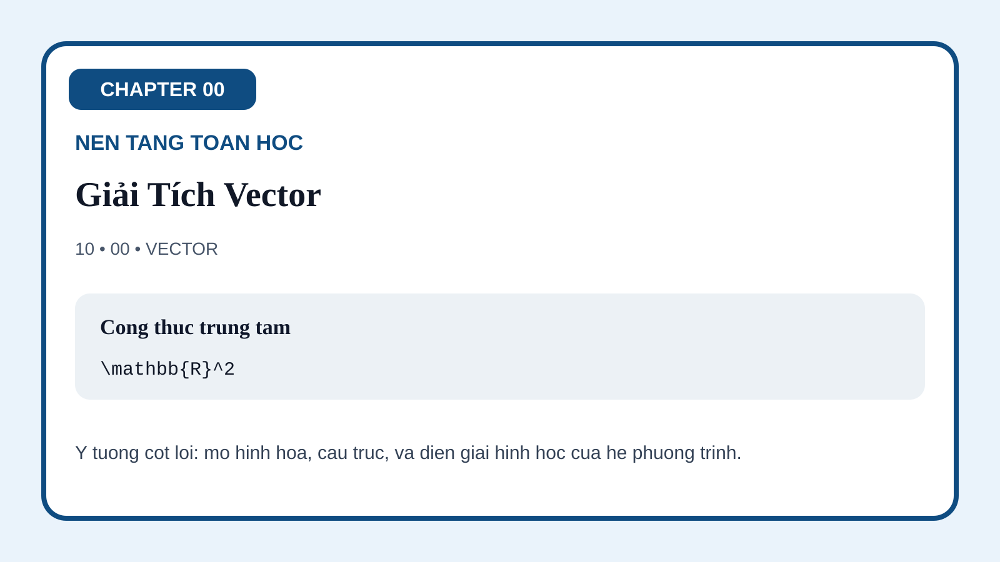

00-01 Ôn tập Giải tích Thực
Hình mở đầu đặt các ý niệm tồn tại, compactness và hành vi cực trị làm ngôn ngữ nền cho các định lý về nghiệm sau này.

Trang này gom các minh họa hiện đang có của Chapter 00 về nền tảng toán học. Trọng tâm ở đây là ngôn ngữ cơ sở của toàn bộ khóa học: giải tích thực, liên tục đều, giải tích đa biến, đại số tuyến tính, số phức, không gian metric, không gian chuẩn, không gian tích vô hướng, lý thuyết tích phân, giải tích vector và hàm đặc biệt. Các hình được thiết kế để làm cho những ý niệm nền tảng này trở nên hình học và thao tác được trước khi chúng quay lại trong ODE, PDE và giải tích hàm.
Hình mở đầu đặt các ý niệm tồn tại, compactness và hành vi cực trị làm ngôn ngữ nền cho các định lý về nghiệm sau này.

Hình này phân biệt liên tục cục bộ với kiểm soát đều toàn cục, chuẩn bị cho ý tưởng rằng compactness có thể nâng tính chất điểm-một thành tính chất đồng đều.

Hình đa biến biến gradient, Jacobian và phép tuyến tính hóa cục bộ thành một ngôn ngữ trực quan cho động lực học nhiều chiều.

Hình này diễn giải ma trận, vector riêng và các hướng bất biến như xương sống đại số của hệ phương trình vi phân tuyến tính.

Hình mặt phẳng phức nhấn mạnh dao động, phép quay, công thức Euler và ý nghĩa hình học của hàm mũ phức.
Hình này tổng quát hóa khái niệm khoảng cách, chuẩn bị cho hội tụ, tính đầy đủ và các không gian hàm của giải tích hiện đại.
Hình chuẩn làm rõ việc chuyển từ khoảng cách sang độ lớn của vector và hàm, qua đó đưa người học vào thế giới Banach.
Hình này mở rộng hình học Euclid sang không gian hàm, với trực giao, chiếu trực giao và ngôn ngữ Hilbert.
Hình tích phân nhấn mạnh tích lũy, hội tụ và các công cụ chuyển đổi sẽ đi cùng sinh viên suốt phần ODE và PDE.

Hình này gom gradient, divergence, curl và các định lý tích phân thành ngôn ngữ trường mà PDE vật lý sẽ dùng liên tục.

Hình cuối giới thiệu các họ hàm đặc biệt như những đối tượng sẽ quay trở lại trong phương pháp chuỗi, tọa độ đặc biệt và PDE cổ điển.